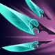
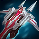

核心裝備
 奪魄之鐮
奪魄之鐮暴擊、技能加速與法力循環很符合庫奇高頻技能玩法。
- 磁性雷射槍
7.2b 物攻提高到 30，充能彈射在五人站位密集時很容易打出額外消耗。
 致死宣告
致死宣告暴擊、穿透與重創兼具，ARAM 泛用性高。
 無盡之刃
無盡之刃提高後期暴擊普攻與整體爆發。

那歐疾刃暴擊後縮短基礎技能冷卻，讓飛彈之外的技能循環更密。
Corki · 長距消耗／技能暴擊型射手
飛彈先用來壓血與逼走位，不要把所有彈藥都浪費在滿血坦克。2 技主要留保命；敵方被控制後再用 1、3 技與普攻灌傷害。你活得越久，飛彈循環價值越高。
本站評級理由：庫奇有長距離飛彈、範圍 1 技與穩定混合傷害，ARAM 很容易在開戰前反覆削血。7.1 提高基礎物攻與 1 技額外 AD 比例，7.2b 又強化磁性雷射槍，暴擊技能流的中期曲線不錯；但他缺乏硬控，吃隊友開戰品質。
近期官方標準 ARAM 未列庫奇專屬百分比修正，維持 100%／100%。7.1 強化基礎物攻與 1 技 AD 比例；7.2b 強化磁性雷射槍物攻。
暴擊、技能加速與法力循環很符合庫奇高頻技能玩法。
7.2b 物攻提高到 30，充能彈射在五人站位密集時很容易打出額外消耗。
暴擊、穿透與重創兼具，ARAM 泛用性高。
提高後期暴擊普攻與整體爆發。

暴擊後縮短基礎技能冷卻，讓飛彈之外的技能循環更密。

補續航，適合長時間對射。

三級鞋提高射手持續輸出。
遠距飛彈容易先手命中，累積額外收益並強化第一輪消耗。

強化前中期技能與普攻。

處理高生命前排更有效。

增加長時間對射續航。

被刺客貼到時降低第一輪爆發。

2 技之外的額外保命與拉角度工具。

被切入時多一層容錯。
1 技 > 3 技 > 2 技
ARAM 開局三個基礎技能各點 1 級，之後主升 1 技、次升 3 技；大絕能點就點。
靠 1 技與飛彈清線消耗，2 技不要拿來單純補傷害。
奪萃與磁性雷射槍後，飛彈先壓血，再趁隊友控制時補 1、3 技與普攻。
站位比輸出更重要。敵方刺客沒露頭前保留 2 技與閃現，飛彈持續磨血就能幫隊伍創造開戰門檻。

多明尼克的問候可替換致死宣告，提高純穿甲輸出。
 守護天使
守護天使可替換那歐或磁性雷射槍，提高後期容錯。
 巨蛇鋒牙
巨蛇鋒牙需要時犧牲一件暴擊裝換破盾功能。
看遊戲卡片下方分類 → 點相同分類 → 看左側 S+／S／A。
飛彈與一技能是主要消耗手段，技能加速與遠距命中增幅能直接提高壓血頻率。
目前出裝會建立高暴擊率，暴擊增幅能直接強化普攻與混合輸出。
技能消耗後仍要靠普攻補傷，命中特效與技能後普攻卡都很實用。
投射物增傷、投射技能加速與技能暴擊都能強化飛彈與一技能。
射程、攻速與移動充能能改善安全輸出，但不如技能與暴擊穩定。
庫奇沒有穩定短冷卻位移，跑速能幫助維持飛彈與普攻距離。
v80.10.0 ARAM A 第一批：庫奇同步 7.1 基礎物攻／1 技 AD 比例強化與 7.2b 磁性雷射槍調整，使用已校正 ARAM 物理圖示。
ARAM 使用獨立於召喚峽谷的資料集；本站會把官方模式平衡、單線 5v5 特性與出裝／符文適配分開判斷，而不是直接複製峽谷配置。